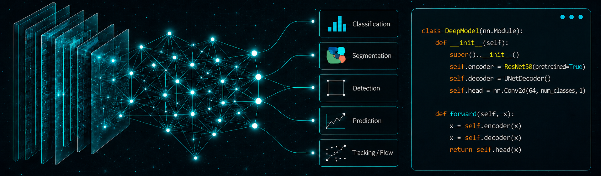
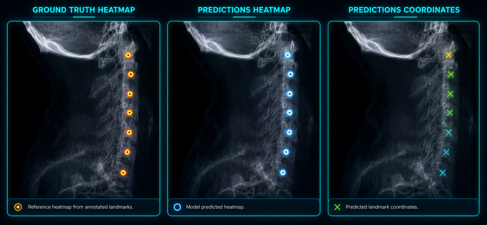
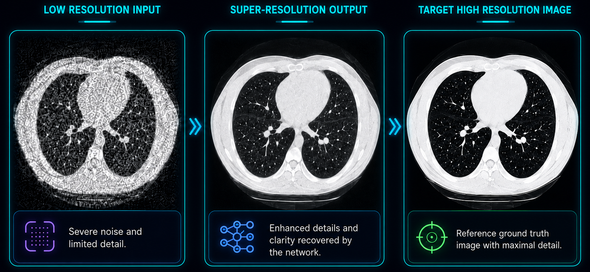
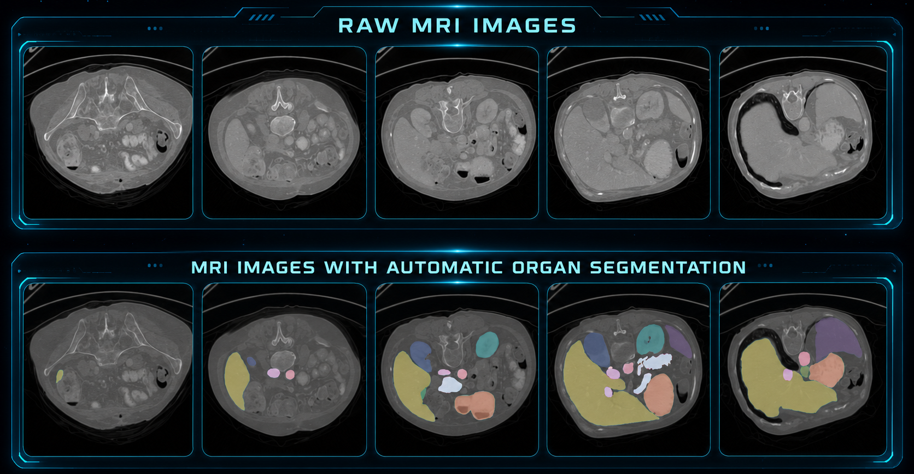
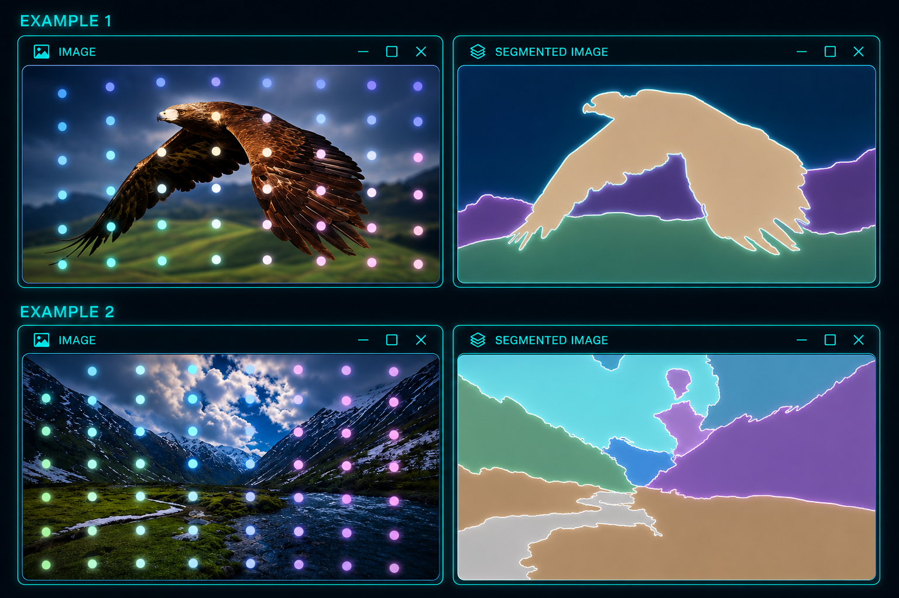
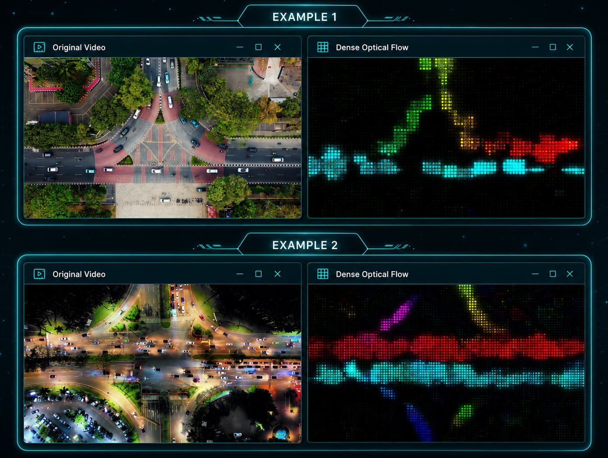
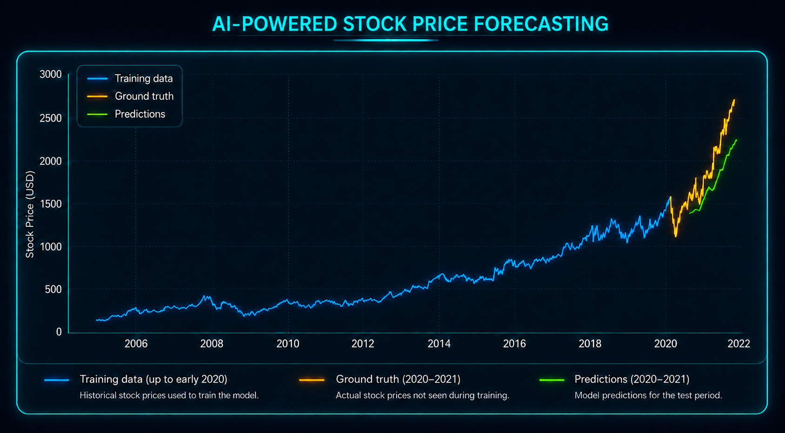

AI & Machine Learning
Engineering learning systems from data design to monitored deployment
Building models that convert medical images, video, structured measurements, and time-series data into validated predictions, spatial measurements, and decision-ready outputs. The work spans dataset design, neural architecture development, quantitative evaluation, deployment, and continuous performance review.
Learning Systems & Architecture

End-to-end systems, not isolated models
Reliable machine learning begins before training and continues after deployment. Data provenance, label quality, preprocessing, objective selection, calibration, and monitoring determine whether a high-performing experiment becomes a dependable engineering capability.
- Problem formulation: translate a scientific or product need into measurable targets, constraints, and acceptance criteria.
- Data and labels: define cohorts, annotations, splits, augmentation, leakage controls, and reproducible preprocessing.
- Model and optimization: select representations, loss functions, regularization, and training strategies that fit the evidence.
- Evaluation and delivery: quantify error modes, robustness, inference behavior, and post-release drift.
Medical Imaging & Computational Anatomy
Image-based models turn anatomical structure into measurable coordinates, region masks, and enhanced imagery. Each example keeps the source, target, and model output visible so performance can be inspected rather than inferred from a single summary metric.
Automated Landmark Detection

Heatmaps to anatomical coordinates
Supervised confidence maps preserve spatial uncertainty during training. Peak locations are then converted into ordered coordinates that can drive measurement, alignment, registration, or downstream biomechanical analysis.
Super-Resolution Reconstruction

Recovering structure from degraded inputs
Paired comparisons expose the trade-off between smoothing, anatomical detail, and generated texture. Reconstruction quality is assessed against the high-resolution reference so visual sharpness does not substitute for structural fidelity.
Multi-class Medical Image Segmentation

Dense anatomical region mapping
Dense prediction assigns an anatomical class to each pixel or voxel, converting scans into quantitative regions that can be measured, visualized, and propagated into analysis pipelines.
The sequence of slices demonstrates why validation must extend beyond one representative image: organ visibility, shape, contrast, and class balance change across the volume.
- Label design: consistent class definitions and reviewable annotation protocols.
- Spatial validation: overlap, boundary, topology, and clinically meaningful measurement errors.
- Quality control: overlay inspection across anatomy, scanners, acquisition settings, and edge cases.
Visual Perception, Segmentation & Motion
Computer-vision systems answer different spatial questions: what is present, where it is, which pixels belong together, and how appearance moves between frames. The model output must match the decision the application actually needs.
Object Detection & Classification
Localization with confidence
Detection combines class prediction with spatial localization and confidence scoring. Thresholding, non-maximum suppression, small-object performance, and scene variation are evaluated together because a correct label with a poor box is still an incomplete result.
Semantic & Instance Segmentation

Pixel-level scene understanding
Semantic masks group pixels by class, while instance-aware methods separate distinct objects within the same class. Boundary quality, occlusion, thin structures, and background confusion reveal more than aggregate accuracy alone.
Directional Optical Tracking

Dense motion estimation
Optical flow estimates pixel displacement between frames and encodes direction and magnitude as a dense field. It supports motion-aware tracking, event detection, temporal stabilization, and quantitative analysis when appearance alone is insufficient.
Forecasting & Sequential Modeling

Sequence models with honest temporal validation
Forecasting requires more than fitting historical curves. Time-respecting splits, walk-forward evaluation, appropriate baselines, horizon-specific errors, and sensitivity to regime change are necessary to understand whether a model generalizes.
This example makes the gap between predictions and later observations explicit, creating a useful diagnostic for lag, smoothing, underfitting, and changing market dynamics.
- Temporal features: lags, rolling statistics, trends, seasonality, and external covariates.
- Evaluation: held-out windows, baseline comparisons, residual analysis, and horizon-aware metrics.
- Monitoring: drift detection, recalibration, retraining triggers, and uncertainty-aware communication.
Machine Learning Delivery Workflow
The delivery loop keeps scientific validity, software quality, and operational behavior connected from the first problem statement through production monitoring.
- Frame the problemDefine the user decision, measurable target, constraints, risks, and acceptance criteria.
- Curate the dataEstablish provenance, labels, cohorts, splits, preprocessing, and leakage controls.
- Design and trainSelect representations, architecture, objectives, optimization, and experiment tracking.
- Validate robustnessTest baselines, error modes, subgroups, calibration, perturbations, and edge cases.
- Deploy inferencePackage reproducible artifacts, interfaces, performance budgets, and release evidence.
- Monitor and improveTrack drift, failures, feedback, retraining criteria, and measurable downstream impact.